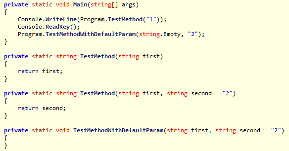
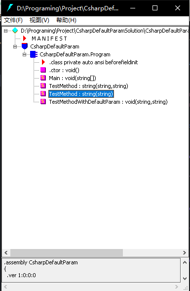
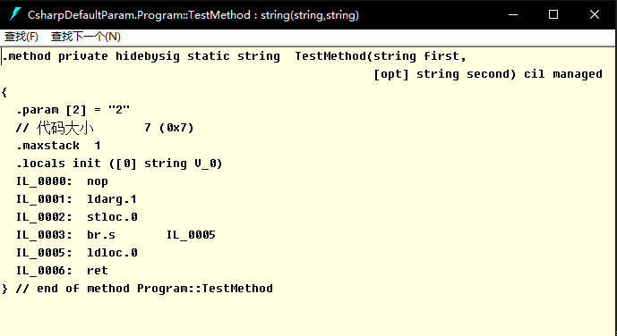

写这一篇的起因是想要通过新增默认参数来代替以前的方法，结果发现尽管在调用时写起来一样，实际上也没有被当做同样的方法，两个方法大致如下：
// 先前的方法-删除
private static string TestMethod(string first)
{
return first;
}
// 新增的同名方法
private static string TestMethod(string first, string second = "2")
{
return second;
}上述两种方法都可以通过 TestMethod("1"); 调用，所以最开始误以为两个方法的调用是等价的，但是实际使用中通过DLL引用的方式会提示找不到方法，这里就出现了问题。
首先我们可以进行一个尝试，会发现这两个方法可以同时存在，还是上面的例子，这时再通过 TestMethod("1"); 调用会发现返回的结果是“1”，也就是第一个没有默认参数的方法
到这里为止，暂时还不太清楚原理，但是可以感觉到调用时程序中的写法可能是区别的，这时候我们可以再深入一点，通过中间语言IL（Intermediate Language）的角度去看一下
借助一个简单的例子，先用常用的反编译工具看一下
static void Main(string[] args)
{
Console.WriteLine(TestMethod("1"));
Console.ReadKey();
TestMethodWithDefaultParam(string.Empty);
}
private static string TestMethod(string first)
{
return first;
}
private static string TestMethod(string first, string second = "2")
{
return second;
}
private static void TestMethodWithDefaultParam(string first, string second = "2")
{
}把编译的好的程序放到ILSpy里面反编译看下

重点对比看下 TestMethodWithDefaultParam 这个方法的调用，可以发现虽然我们没有传入第二个参数，但是由于默认参数的存在，编译器自动帮我们补上了一个参数，而 TestMethod 方法则明显是调用第一个没有默认参数的，有默认参数的 TestMethod 方法被忽略了
通过ILSpy我们简单的看到调用时两个方法的区别，但是默认参数的实现情况我们还不是很清楚，所以可以再通过VisualStudio自带的IL反汇编程序ildasm看一下，使用VS的命令行工具输入 ildasm 打开程序，然后打开我们的控制台程序的exe文件

通过这个目录我们可以明确的看到，两个TestMethod方法的参数形式，默认参数的方式只是让我们在调用的时候可以省略参数，而在程序中这个方法仍然具有这个参数，当两个同名的方法一起存在是就相当于方法的重载，调用时传入对应的参数即调用对应的方法
这时我们打开有默认参数的方法，可以看到在IL的形式下，默认参数前面有个[opt]的标识，代表着Optional，即“可选的”，这是C#的一个特性标签——OptionalAttribute，通过OptionalAttribute和DefaultParameterValueAttribute这两个特性也就实现了C#的默认参数，这方面已经有相关的博文，可以参考谈谈C# 4.0新特性“缺省参数”的实现
